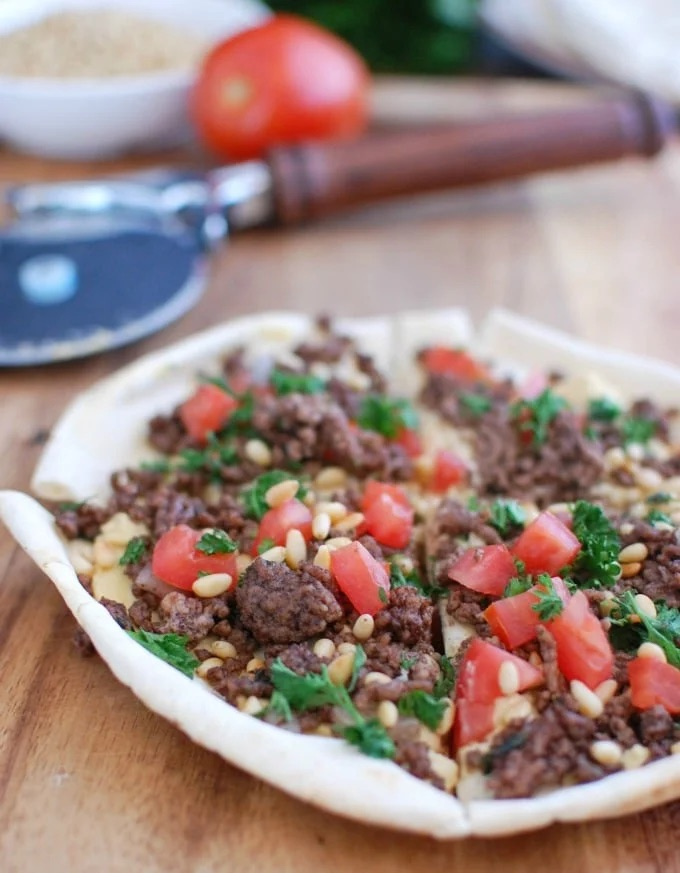

Arayes Pitza

Description
Arayes Pitza is a popular Lebanese dish made with crispy pita bread and topped with
hummus, ground beef, diced tomatoes, parsley, and pine nuts. A delicate yet hearty meal, the Arayes Pizza
is great for those looking for heal-concious meals without sacrificing on flavor.
Ingredients
- 1 tablespoon of ghee
- 1/4 cup of chopped sweet onion
- 1lb. of ground beef
- 1/2 teaspoon of salt
- Dash of pepper
- 1 teaspon of cinnamon
- 1 teaspoon of allspice
- (Optional) 1/4 teaspoon of cayenne pepper
- 1/2 teaspoon of sumac
- 4 pita bread rounds
- 1 cup of hummus (divided)
- 1 cup of diced tomatoes (divided)
- 1/2 cup of chopped parsley (divided)
- 3 tablespoons of toasted pine nuts (divided)
Steps
- Preheat oven to 350 degrees Fahrenheit.
- Add ghee butter to large skillet over medium-high heat. Add the chopped onion and sauté for 2 minutes.
- Add the ground beef, salt, pepper, cinnamon, allspice, cayenne pepper and sumac and continue to sauté for 7-8 minutes, or until the beef is browned and cooked through. Set aside.
- Heat a small skillet over medium heat. Add the pine nuts and toast for two minutes, stirring frequently. Remove from the skillet and set aside once toasted.
- Set your four pita rounds on two baking sheets. Start by spreading a thin layer of hummus on each pita followed by the cooked ground beef divided among the four pitas and continue to do the same with the diced tomatoes, fresh parsley and toasted pine nuts.
- Toast the pitas for 10 minutes, or until the pita becomes toasted and slightly crispy.